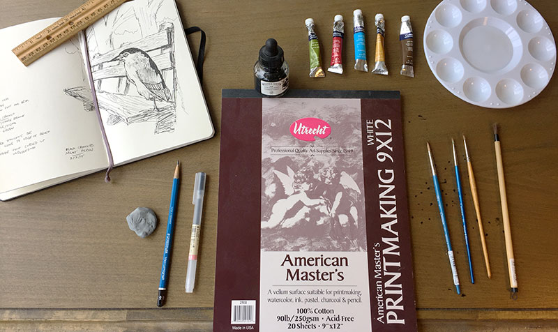

Birds of Chicagoland:
Materials & Process

All of the paintings in this book were created with ink and watercolor on paper. I would begin by researching photos of the bird and location on Flickr and Google. I then did a rough sketch in a Moleskin journal using MUJI 0.5mm gel ink pens. For the final painting, I used American Master's 9x12" 100% cotton printmaking paper, and would first block out the painting with Staedtler Mars Lumograph 4H pencils. For paintings with watercolor, I would paint that part first, using Windsor & Newton Cotman watercolor paint and brushes, sizes 0, 1, and 4. The ink came last, using Windsor & Newton black India ink and Yasutomo bamboo brushes, size SW0. Lastly, the paintings were scanned and edited for color correction in Adobe Photoshop.